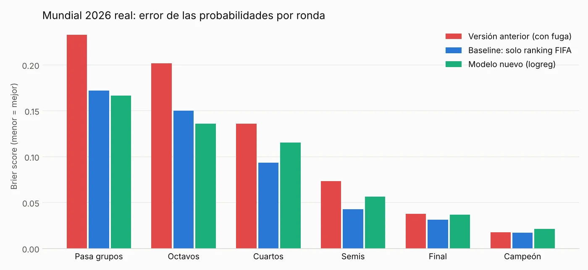
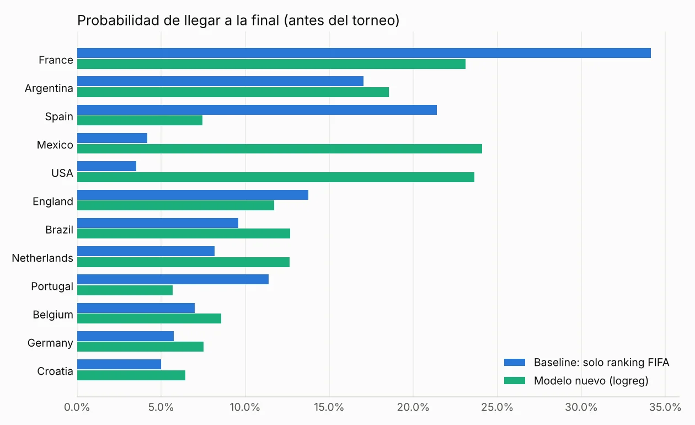

Un modelo que estima ganar, empatar o perder en cada partido y simula el torneo completo con el cuadro oficial de FIFA. La historia de este proyecto es cómo encontré una fuga de datos en mi propia primera versión, la corregí y evalué el resultado con honestidad contra el Mundial real.
La primera versión parecía excelente: AUC de 0,89 y tenía a España, que terminó campeona, como su favorita número 1. Al revisarla encontré que usaba como variable los goles que cada equipo marcó en el mismo partido que intentaba predecir. Esa sola variable explicaba el 63% de las decisiones del modelo.
Acertar al campeón fue suerte, no modelo.
En la validación histórica ganó una regresión logística regularizada (log loss 0,983 frente a 1,016 del baseline). La regla de selección se fijó antes de mirar 2026.
España ganó el Mundial al vencer 1-0 a Argentina en la prórroga. El torneo real se usó solo como examen final:
| Versión | Error por ronda (Brier) ↓ | Eliminatorias acertadas | Puesto de España | Puesto de Argentina |
|---|---|---|---|---|
| Versión 1 (con fuga) | 0,117 | – | 1.º | 45.º |
| Modelo corregido | 0,089 | 19 de 31 | 9.º | 4.º |
| Baseline: solo ranking FIFA | 0,085 | 25 de 31 | 2.º | 3.º |
Lo que salió bien: el modelo corregido mejora claramente a la versión 1 y es más preciso que el baseline en las primeras rondas.
Lo que salió mal: en 2026 no le ganó al ranking FIFA. Sobrevaloró a los anfitriones: le dio a México y Estados Unidos cerca de 24% de llegar a la final, y ambos cayeron en octavos. La causa probable es que el efecto anfitrión se aprendió de mundiales antiguos, cuando los anfitriones solían ser potencias y no había ranking FIFA para separar "ser local" de "ser fuerte".
Un solo torneo son 31 eliminatorias: es evidencia, no un veredicto. Los siguientes pasos ya están identificados: calcular el Elo con todos los partidos internacionales (no solo mundiales) y estimar el efecto anfitrión solo con datos desde 1994. Cualquier mejora se validará con walk-forward y no ajustando contra 2026.


Una métrica alta no prueba que un modelo funcione: hay que preguntarse si cada variable se conoce antes del momento de predecir. También aprendí a compararme siempre contra un baseline simple, y a separar los datos con los que elijo el modelo de los datos con los que lo evalúo.